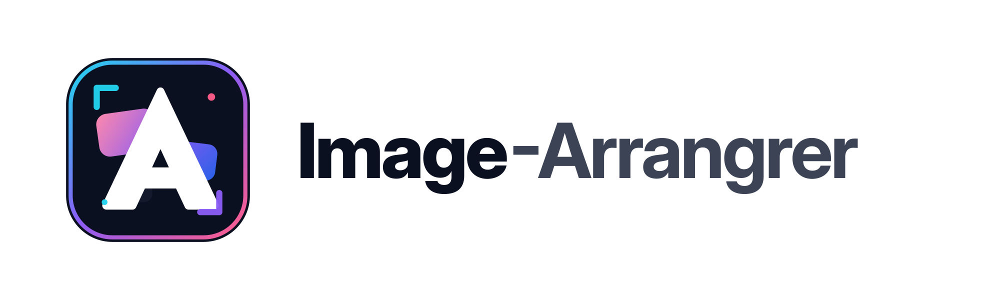
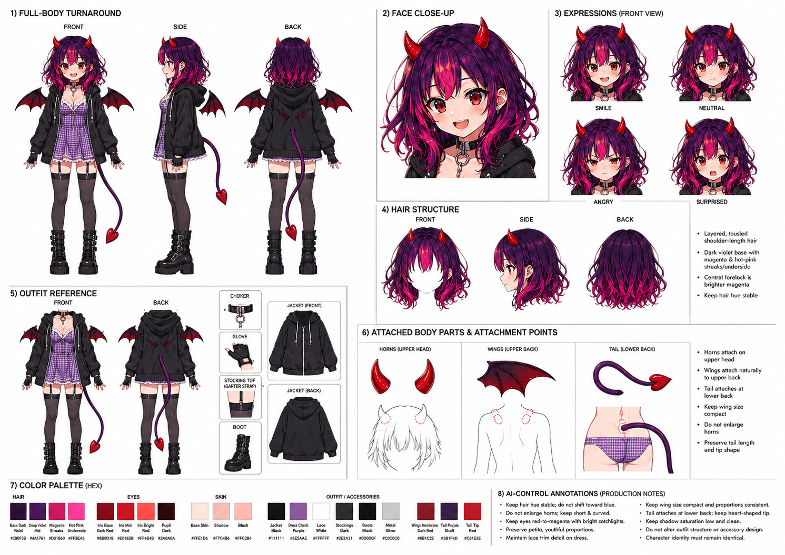

Real references only
The bundled sample keeps only the two real Aichan reference files. Empty part rows are not prefilled.
base.master: assets/base/aichan_design.png
base.key: assets/base/aichan.png

MIT License · Node.js 20+ · zero dependenciesCharacter-consistent generation is a reference-image game — and today the bookkeeping is a spreadsheet and a folder of PNGs. image-arranger is the local-first layer that remembers: canonical references, adopted candidates, the prompt behind every image, and what's still queued. It doesn't generate — by design. It works with any generation service.
$ git clone https://github.com/aiarranger/image-arranger && cd image-arranger && node server.mjs --init sample

Source referenceAfter the source sheet is imported, the app manages smaller working states: parts, color decisions, queue files, and adopted results.
The bundled sample keeps only the two real Aichan reference files. Empty part rows are not prefilled.
base.master: assets/base/aichan_design.png
base.key: assets/base/aichan.png
Generation work appears as plain JSON only after the operator queues it. A fresh clone starts with no pending request files.
{
"targets": [],
"results": []
}
The gallery does not invent thumbnails. It shows files that were registered and adopted by the operator.
images: []
videos: []
From one key visual to a consistent character across stills and video — every step feeds the next.
One-shot generate the character's canonical sheet from a reusable prompt template. Fix one part without rerolling everything: decompose into per-part references.
{
"sourceFiles": [
"assets/base/aichan_design.png",
"assets/base/aichan.png"
],
"creates": "base.master"
}
Manage per-part reference entries (face, expression, outfit…) with candidates. Only approved ones get adopted.
assets/base/aichan_design.png
Key visualassets/base/aichan.png
Part rowscreated only from real registered outputs
Compose prompts that attach adopted images as source inputs. Improve or retry; adoption stays exclusive.
{
"action": "generate",
"refImages": ["base.master"],
"results": []
}
Queue video only after a real adopted scene still exists. For locked-camera motion, reuse the same adopted still as both start and end.
Each request is a JSON file with prompt, references and output dir. Edit, cancel or complete from the UI — or hand the folder to an agent.
{
"status": "requested",
"action": "generate",
"results": []
}
The generators are great — the bookkeeping around them is not. This fixes the bookkeeping.
One Node.js file, no build step, no accounts. Your prompts and assets never leave your machine — everything lives in a workspace folder you choose, as plain JSON and files you can read, grep and version.
Every output is a candidate; you adopt the good ones. Adopted images become the canonical references for the next round — per part, per character — and source links always resolve to the current canonical at queue time.
Requests are JSON files, not API calls. Any coding agent can process them — and you review what comes back.
--doctor pre-publish scanRun it before sharing a workspace.
Full bilingual UI, one click.
Language言語A dark showcase wall of everything you adopted — gated so only reviewed work ships.
Hand the queue to a coding agent. It reads the JSON, generates with whatever it has, drops the results back — and you adopt only what passes review.
Read AGENTS.md →// requests/req-0042.json { "prompt": "full body, red dress, soft studio light", "refImages": ["assets/face-canonical.png"], "service": "chatgpt", "outputDir": "outputs/req-0042", "status": "requested" }
Requires Node.js 20+. No dependencies, no build step.
# clone & run
git clone https://github.com/aiarranger/image-arranger.git
cd image-arranger
node server.mjs --workspace ./workspace/sample --init sample --port 4217
→ open http://127.0.0.1:4217 — sample workspace, no accounts, nothing leaves your machine
# before publishing a workspace
node server.mjs --doctor
The --doctor scan looks for secret-like strings, local paths and missing provenance fields. Every asset records license, AI-generated and human-reviewed flags.
No — by design. image-arranger is the management layer around generation: it remembers references, prompts, candidates and queued requests. You (or your agent) generate wherever you already generate.
In a workspace folder you chose, as plain JSON and image files. No database, no cloud, no accounts. Delete the folder and it's gone; copy it and it's backed up; git init it and it's versioned.
No. The tool makes zero network calls to generation services. It runs on 127.0.0.1 and works fully offline.
The queue is a folder of reviewable JSON files — not live API access. The agent reads requests and drops results back; nothing becomes canonical until you adopt it. --doctor scans a workspace before you publish it.
はい。UIは日英完全対応で、ワンクリックで切り替えられます（プロンプト本文はどの言語でも扱えます）。
Local-first. Zero dependencies. Thirty seconds to running.
$ git clone https://github.com/aiarranger/image-arranger && cd image-arranger && node server.mjs --init sample
image-arranger は「生成しない」画像・動画生成ワークフロー管理ツールです。 どのリファレンスを正とするか、どの候補を採用したか、何を依頼中か——生成サービス側が持っていない管理層をローカルで完結させます。